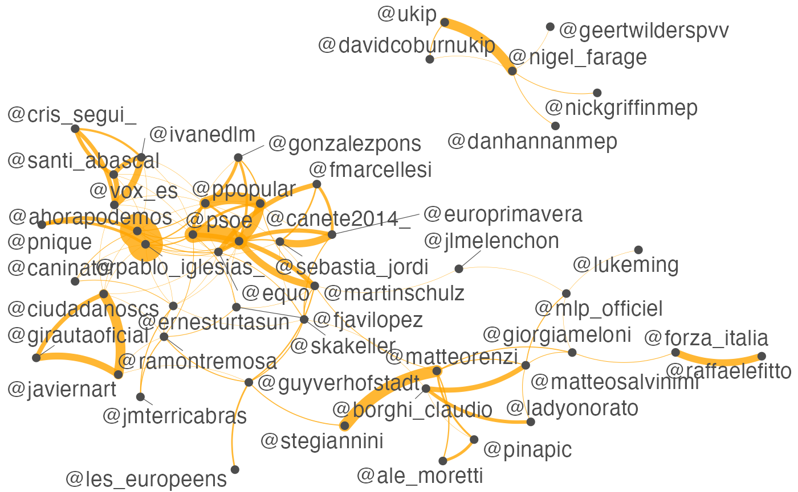

twitter.RmdUsing quanteda’s fcm() and textplot_network(), you can perform visual analysis of social media posts in terms of co-occurrences of hashtags or usernames in a few steps. The dataset for this example contains only 10,000 Twitter posts, but you can easily analyze more than one million posts on your laptop computer.
## Document-feature matrix of: 6 documents, 42,327 features (100.0% sparse).user_dfm <- dfm_select(tweet_dfm, pattern = "@*")
topuser <- names(topfeatures(user_dfm, 50))
head(topuser)## [1] "@pablo_iglesias_" "@elenavalenciano" "@canete2014_"
## [4] "@nigel_farage" "@martinschulz" "@mlp_officiel"## Feature co-occurrence matrix of: 6 by 6 features.
## 6 x 6 sparse Matrix of class "fcm"
## features
## features @pacomarhuenda @pablo_iglesias_ @kopriths @gapatzhs
## @pacomarhuenda 0 1 0 0
## @pablo_iglesias_ 0 0 0 0
## @kopriths 0 0 0 1
## @gapatzhs 0 0 0 0
## @mariaspyraki 0 0 0 0
## @ernesturtasun 0 0 0 0
## features
## features @mariaspyraki @ernesturtasun
## @pacomarhuenda 0 0
## @pablo_iglesias_ 0 1
## @kopriths 1 0
## @gapatzhs 1 0
## @mariaspyraki 0 0
## @ernesturtasun 0 0user_fcm <- fcm_select(user_fcm, pattern = topuser)
textplot_network(user_fcm, min_freq = 0.1, edge_color = "orange", edge_alpha = 0.8, edge_size = 5)